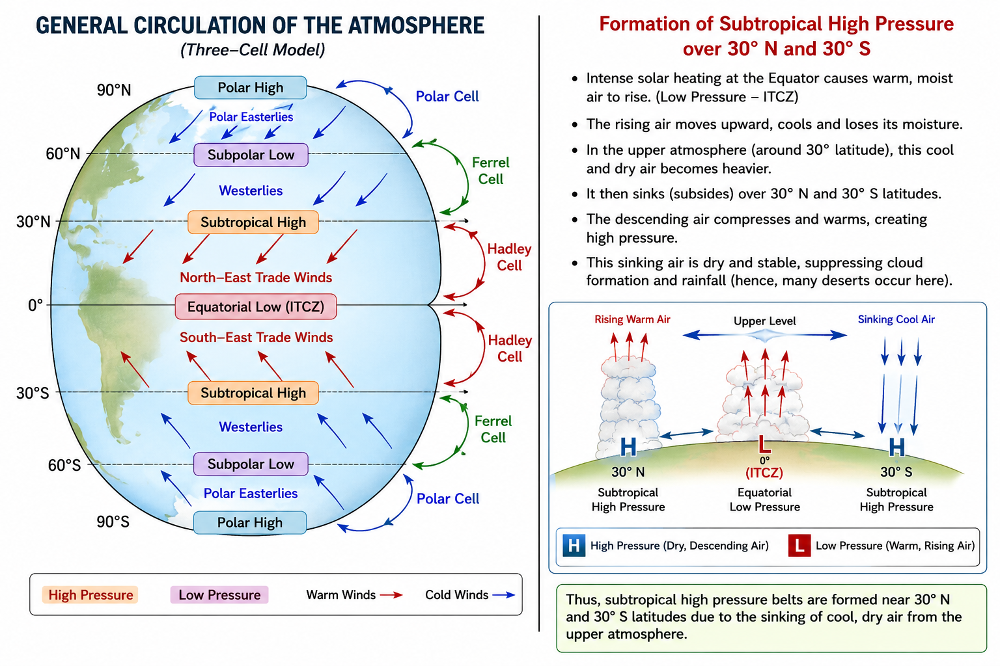

GEOGRAPHY- CLASS-11: FUNDAMENTALS OF PHYSICAL GEOGRAPHY
CHAPTER-9
Atmospheric Circulation and Weather Systems
1. Multiple Choice Questions
(i) If the surface air pressure is 1,000 mb, the air pressure at 1 km above the surface will be:
Answer: (c) 900 mb
Explanation: Air pressure decreases with height. At about 1 km above sea level, the pressure is approximately 900 mb.
(ii) The Inter Tropical Convergence Zone normally occurs:
Answer: (a) Near the Equator
Explanation: The Inter Tropical Convergence Zone (ITCZ) is a low-pressure belt located near the Equator where the trade winds of both hemispheres converge.
(iii) The direction of wind around a low pressure in the Northern Hemisphere is:
Answer: (c) Anti-clockwise
Explanation: Due to the Coriolis force, winds around a low-pressure centre in the Northern Hemisphere move in an anti-clockwise direction.
(iv) Which one of the following is the source region for the formation of air masses?
Answer: (c) The Siberian Plain
Explanation: The Siberian Plain is a vast, uniform, cold land area where continental polar air masses are formed.
2. Answer the following questions in about 30 words.
(i) What is the unit used in measuring pressure? Why is the pressure measured at station level reduced to the sea level in preparation of weather maps?
Answer:
Atmospheric pressure is measured in millibars (mb) or hectopascals (hPa). Pressure readings are reduced to sea level so that observations from places at different elevations can be compared accurately on weather maps.
(ii) While the pressure gradient force is from north to south, i.e. from the subtropical high pressure to the equator in the northern hemisphere, why are the winds north easterlies in the tropics?
Answer:
As air moves towards the Equator, the Earth's rotation causes the Coriolis force to deflect it to the right in the Northern Hemisphere. Hence, the winds blow as the North-East Trade Winds.
(iii) What are the geostrophic winds?
Answer:
Geostrophic winds are winds that blow parallel to the isobars when the pressure gradient force and the Coriolis force are in balance. They generally occur in the upper atmosphere.
(iv) Explain the land and sea breezes.
Answer:
During the day, land heats faster than the sea, causing cool air to blow from the sea towards the land. This is called sea breeze. At night, land cools faster than the sea, so air blows from the land towards the sea, forming the land breeze.
3. Answer the following questions in about 150 words.
(i) Discuss the factors affecting the speed and direction of wind.
Answer:
The speed and direction of wind are mainly controlled by three important forces. The first is the Pressure Gradient Force (PGF), which causes air to move from areas of high pressure to areas of low pressure. A steeper pressure gradient results in stronger winds. The second is the Coriolis Force, produced by the Earth's rotation. It deflects winds to the right in the Northern Hemisphere and to the left in the Southern Hemisphere, influencing wind direction. The third is Frictional Force, which acts near the Earth's surface. Friction slows down wind speed and slightly changes its direction, especially over rough land surfaces. Over oceans, where friction is less, winds move faster. The combined action of these three forces determines the actual speed and direction of winds across the Earth's surface.
(ii) Draw a simplified diagram to show the general circulation of the atmosphere over the globe. What are the possible reasons for the formation of subtropical high pressure over 30° N and S latitudes?
Answer:

Description:
Subtropical high-pressure belts develop around 30° North and 30° South because the air that rises at the Equator cools in the upper atmosphere and moves poleward. Around 30° latitude, this cool and dry air becomes heavier and sinks, creating high pressure. This descending air is dry, resulting in clear skies and the formation of many of the world's major deserts such as the Sahara, Arabian and Australian deserts. These high-pressure belts are also the source regions of the trade winds and westerlies.
(iii) Why does tropical cyclone originate over the seas? In which part of the tropical cyclone do torrential rains and high velocity winds blow and why?
Answer:
Tropical cyclones originate over warm tropical oceans where the sea surface temperature is generally above 27°C. Warm seawater causes rapid evaporation, supplying large amounts of moisture and heat to the atmosphere. As the moist air rises and condenses, latent heat is released, strengthening the cyclone. The heaviest rainfall and strongest winds occur in the eyewall, which surrounds the calm central eye. In this region, warm moist air rises rapidly, producing towering clouds, intense thunderstorms and very low atmospheric pressure. The steep pressure gradient around the eye causes extremely high wind speeds. Thus, the eyewall is the most destructive part of a tropical cyclone, while the eye remains relatively calm.